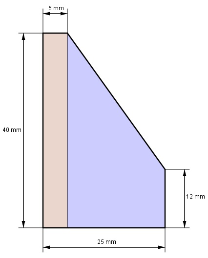

Aufgabe 95 Wie viel laufenden Meter Leisten entspricht 1 m³?  V = G * h |:h V h = --- G 1 m³ = 1 000 000 cm³ 40 mm = 4 cm 5 mm = 0,5 cm 25 mm = 2,5 cm 12 mm = 1,2 cm G = Rechteck (rot) + Trapez (blau) 4 cm + 1,2 cm G = 4 cm * 0,5 cm + ----------------- * (2,5 cm - 0,5 cm) 2 G = 7,2 cm² 1 000 000 cm³ h = --------------- = 138 889 cm = 1 388,9 m 7,2 cm²